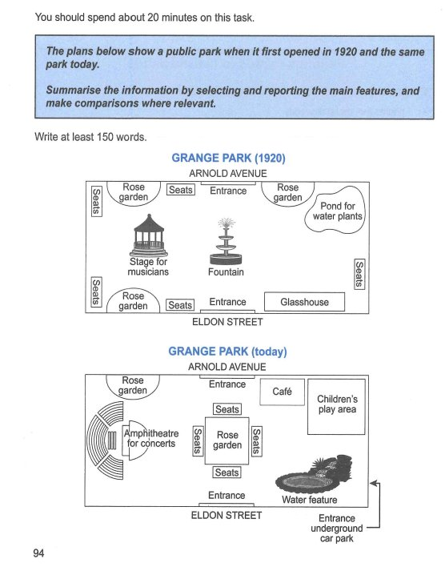

Breakthrough 1 · Task 1 Length
219 words
135w → 149w → 133w → 219w
First timed Task 1 well past the 150-word floor, laid out in 4 clean spatial paragraphs covering every major feature on both maps.
Breakthrough 2 · Task 2 Accuracy
6 / 13 clean
3/13 → 3/11 → 6/13
Your error-free sentence count in Task 2 doubled under exam timing, with your C1 closing sentence (whether … depends on how effectively …) completely spotless.
Breakthrough 3 · Spelling Control
1 slip in Task 2
8 → 5 → 1 Task 2 slips
Genuine spelling errors in Task 2 dropped from eight to just one (beurocratic). In Task 1, checking the map labels rescues the remaining typing slips.
Task 1 · Grange Park Maps
219 words · 4 paragraphs · 3 / 11 clean
Est. Band 6.5 – 7.0
Grammatical Range & Accuracy6.5
What is working: Accurate coverage of every key change, crisp 4-paragraph spatial order (Intro → Overview → Centre/West → East), and natural passives (has been replaced by, is occupied by, can be found).
Fastest jump to 7.0–7.5: Copy labels straight off the map (amphitheatre, water plants, car park) and catch one singular/plural check (rose garden … was). Six of your eight slipped sentences are one-word fixes.
Task 2 · Self-Employment (Two-Part)
220 words · 5 paragraphs · 6 / 13 clean
Est. Band 6.5 – 7.0
Grammatical Range & Accuracy7.0
What is working: Your LR and GRA are already sitting solidly at your Band 7.0 baseline. You answered both questions calmly, beat the intro comma splice, nailed a suboptimal work-life balance, and wrote a textbook C1 closing sentence.
Fastest jump to 7.5 cushion: At 220 words, you are 30 words short of 250. Merge Paragraphs 3 and 4 into one Disadvantages body, and add one concrete consequence sentence after each For example, (~40 words total).
Old Habits Officially Defeated Today:
(1) The Task 2 intro comma splice (Some argue …, others believe …) is gone: While some prefer …, others believe … worked first time.
(2) how effectively its financial risks are managed fixed the adverb slip from Timed Mock #1.
(3) realised used British -ise right in the final sentence.
(4) a suboptimal work-life balance nailed a + adjective + hyphenated singular noun, and a large proportion of self-employed workers face nailed plural agreement.
A Note from Belfast Before Saturday
You have done the real work, Ning.
Looking back to Lesson 1 when your diagnostic essay ran to 487 words across seven story paragraphs, the distance you have travelled in six weeks is remarkable. You proved your Band 7.0 baseline in Essay #5 (9 / 15 clean), you broke through on Speaking Part 2, and across your last three timed mocks you brought Task 2 spelling slips down from eight to one while writing calmly under the clock.
You do not need to learn a single new fancy word between now and Saturday. Walk into the room with a clear head, trust the structure you already own, give each Task 2 example one extra sentence so you pass 260 words effortlessly, and protect your final two minutes for the backwards read. I am genuinely proud of the craft you have put into this.
— Gareth
Exact word counts computed from your submitted text: Task 1 = 219 words (19 / 62 / 78 / 60 across 4 paragraphs); Task 2 = 220 words (48 / 61 / 38 / 33 / 40 across 5 paragraphs). Band estimates reflect the written work above and are my coaching guide, not official examiner marks.
Built straight from your own writing and speaking track record — no generic test-prep filler. Read this card once on Friday evening and once over breakfast on Saturday morning.
Tip 1 · Word Count & Development
Add One Consequence Sentence to Every Example
You hit 219 words on Task 1 today (brilliant), while Task 2 stopped at 220 words. Whenever you write For example, …, never stop after one sentence. Add one follow-up explaining the real-world consequence (As a result, … / This makes it difficult to …). Two extra sentences take you cleanly to 265–285 words and keep Task 2 in 4 solid paragraphs.
Tip 2 · Task 1 Visual Accuracy
Copy Labels Straight Off the Map or Chart
In Task 1, every label on the page is free spelling insurance: amphitheatre, water plants, car park. Before moving on, check three things against the image: exact spelling of labels, exact dates (e.g. 1920 vs today), and any percentage change ((new − old) ÷ old × 100). Always include a clear Paragraph 2 overview with zero raw figures.
Tip 3 · Your 2-Minute Backwards Sweep
Read From the Last Sentence Back to the First
Reading backwards breaks your brain out of reading what you meant to type. Hunt only your top four targets:
(a) spelling (transformed, lying, surrounding, bureaucratic),
(b) one spelling system (British -ise / centre / organisation),
(c) plural vs singular verbs (rose garden … was vs workers … face), and
(d) small words (provides them with, decide which, minimises exposure, an underground car park).
Tip 4 · Opener Subject Check
Name Who Does the Action After the Comma
Whenever you open with Despite + -ing or While + adjective, check the very first noun after the comma: it must be the exact subject doing that action.
Despite having the exact same size, the park has been redeveloped.
Tip 5 · C1 Grammar Restraint
Use 3–4 Structures You Already Own
Skip heavy thesaurus words. Your natural Band 7.0–7.5 toolkit is already built — pick three or four per Task 2 essay:
While some …, others …
What makes … is …
Not only …, but also …
…, leading to …
whether … depends on …
Tip 6 · Speaking Room Locks
Past Simple Opening + 4 Trigger Words + A.R.E.A.
Part 2 opening line: If the card asks about a specific past event, launch cleanly in Past Simple (“Last year I visited…”), never Present Perfect. Write only 4 single trigger words in your 1-minute prep and ride the 3-Act Arc (Context 30s → Core Scene 45s → Reflection 45s).
Part 3: Your natural strength — stay calm and follow A.R.E.A. (Answer → Reason → Example → Alternative: “Having said that,…”).
Tip 7 · Calm 60-Minute Clock Plan
Protect Task 2 (Two-Thirds of Your Writing Mark)
| Task & Weight |
Time Budget |
Target Length |
Minute-by-Minute Split |
| Task 1 (1/3 of marks) |
20 minutes max |
165–200 words (4 paragraphs) |
3 min scan & plan overview → 15 min write Intro, Overview, 2 grouped bodies → 2 min check labels, numbers & backwards sweep. Stop at 20:00. |
| Task 2 (2/3 of marks) |
40 minutes |
265–295 words (4 paragraphs) |
5 min 4-box plan (check ALL parts of prompt!) → 32 min write with 2 developed examples → 3 min backwards sweep (spelling, British -ise, verbs, small words). |
Interactive Pocket Checklist (Auto-Saves)
Tick Off Before You Put Your Pen / Keyboard Down
0 / 7 ticked

Map Label Watchlist
Copy These Straight Off the Plan
You covered every major redevelopment accurately. Four of your slips in Task 1 came from typing labels that were printed right on the page:
amphitheatre
water plants
car park (two words)
north-west rose garden
Notice in 1920 there were three rose gardens (north-west, south-west, and north-east). Today, only the north-west rose garden remains — so specifying north-west and singular garden fixes both accuracy and agreement in one move.

Fastest Upgrade: 220 → 260+ Words
Merge Body 2 & Add One Consequence Line
Your grammar and vocabulary already read at Band 7.0, with only one spelling slip (beurocratic). Two tiny structural moves push Task Response up to match:
- Merge Paragraphs 3 and 4 (both cover disadvantages) into one sturdy Body 2 paragraph (71w → ~95w).
- Extend each example by 1 sentence (~20 words each): after decide which projects to take, add why that improves motivation; after securing long-term contracts, add how lean months make saving or paying bills harder.
Habit 1 · Copy Visual Labels & Stay British
Task 1 had amphitheathre, anphitheathre, water plant, carpark, tranformed, lieing, and sourrounding. Task 2 mixed organisation / minimises / realised with prioritize / organizations. Pick British -ise / centre and run a 60-second spelling check against the prompt.
Habit 2 · Verb Patterns & Small Words
Four quick academic patterns to keep sharp: provides them with more freedom, decide on which projects, minimises the exposure (general uncountable noun, zero article), and benefits of economies of scale.
Habit 3 · Singular/Plural & Present Tense Lock
Only the rose garden … was kept (one north-west garden remains), the entrances from Arnold Avenue and Eldon Street (two entrances), and the financial volatility it introduces (present simple for general truths).
Habit 4 · Develop Examples Past 250 Words
Your ideas in Task 2 are sharp, crisp, and academic. Giving each For example, one extra consequence sentence adds ~40 words automatically and turns a 220-word outline into a Band 7.5 answer.
Live Practice Drill · Correct Each Sentence Before Opening the Model
Your exact ideas, voice, and structure kept intact — only genuine slips are marked in rose and fixed in emerald. Sentences with a Style, not an error note stay exactly as you wrote them.
Task 1 · Grange Park (219 words)
Task 2 · Self-Employment (220 words)
Paragraphing note for Task 2: On exam day, merge your third and fourth paragraphs into a single Disadvantages body paragraph and add one consequence sentence after each example so you sit comfortably around 265–285 words.
Notice how neither model uses obscure or heavy vocabulary. Both keep your own observations and arguments, using clean British spelling, clear paragraphing, fully developed examples, and three or four natural C1 structures (highlighted in navy).
Task 1 Reference Model · Grange Park
195 words · 4 paragraphs
The plans illustrate how the layout of Grange Park has changed from its opening in 1920 to the present day.
Overall, although the park has retained its original footprint and both street entrances, it has been extensively redeveloped from a quiet space of scattered gardens and seating into a more modern leisure venue with concert and family facilities. Only the rose garden in the north-west corner remains unchanged.
In 1920, a fountain stood in the centre of the park between the Arnold Avenue and Eldon Street entrances. Today, it has been replaced by a large square rose garden bordered by seats on all four sides. To the west, the former stage for musicians and its nearby benches have been removed to make room for an amphitheatre for concerts, while the south-west rose garden is also gone.
The eastern side has seen equally substantial redevelopment. On the north-east side, the pond for water plants and its neighbouring rose garden have been replaced by a children’s play area and a café, respectively. Finally, in the south-east corner, a water feature now stands in place of the old glasshouse, alongside a new entrance to an underground car park.
Why this scores 7.5+: Tight thematic overview (quiet gardens → modern leisure venue) without listing every single feature twice, accurate north-west / north-east / south-east referencing, and spotless label spelling.
Task 2 Reference Model · Self-Employment
291 words · 4 paragraphs
An increasing number of people today opt for self-employment rather than working for an established company or organisation. While the desire for independence and freedom from workplace bureaucracy explains much of this shift, working for oneself also brings genuine financial and personal drawbacks.
What attracts many professionals to self-employment is the autonomy it offers over their daily work. Freelancers and sole traders can choose which projects to take on, set their own hours, and decide how to prioritise competing tasks. For example, an independent consultant can decline low-value assignments and reserve time for demanding projects that genuinely interest them, which tends to raise both motivation and job satisfaction. A further factor is frustration with rigid hierarchies and office politics in large organisations, where routine decisions can stall behind layers of approval. Working independently removes much of that friction.
Nevertheless, self-employment carries substantial risks, the most pressing of which is financial instability. Unlike salaried employees, self-employed workers rarely enjoy a fixed monthly salary or paid leave, and many struggle to secure long-term contracts. When a major client cancels a project unexpectedly, an independent worker may face several lean months without reliable income, making it difficult to save or plan household expenses. In addition, an unpredictable workload often blurs the boundary between work and home life, leading to long hours during busy periods and chronic stress. On a wider scale, a shift away from larger teams can also weaken the benefits of economies of scale and shared workplace expertise.
In conclusion, although self-employment appeals to people seeking control over their time and relief from corporate bureaucracy, it demands a high tolerance for irregular income and fluctuating workloads. Ultimately, whether working for oneself proves rewarding depends on how effectively those financial risks are managed.
C1 structures used (4): Concession opener (While …), Cleft sentence (What attracts … is …), Relative clause of proportion (the most pressing of which is …), Resultative participle clause (, leading to …) + your own noun-clause closing (whether … depends on …).